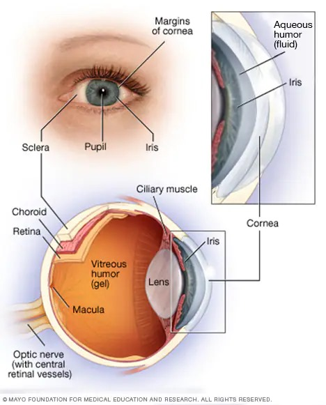

Color blindness or color vision deficiency (CVD) is the decreased ability to see color or differences in color. Some people with color blindness have major impairment: difficulty in reading traffic lights and some academic activities, discomfort in bright environments, decreased visual acuity, etc. However, most issues are minor, and people with colorblindness automatically develop adaptations and coping mechanisms.
The most common cause of color blindness is an inherited problem or variation in the functionality of one or more of the three classes of cone cells in the retina, which mediate color vision. The most common form is caused by a genetic disorder called congenital red–green color blindness. Males are more likely to be color blind than females, because the genes responsible for the most common forms of color blindness are on the X chromosome. Females who are not color-blind can carry genes for color blindness and pass them on to their children. Color blindness can also result from physical or chemical damage to the eye, the optic nerve, or parts of the brain. Screening for color blindness is typically done with the Ishihara color test.
There is no cure for color blindness. Diagnosis may allow an individual, or their parents/teachers to actively accommodate the condition. Special lenses such as EnChroma glasses or X-chrom contact lenses may help people with red–green color blindness at some color tasks, but they do not grant the wearer "normal color vision". Mobile apps can help people identify colors.
Red–green color blindness is the most common form, followed by blue–yellow color blindness and total color blindness. Red–green color blindness affects up to 1 in 12 males (8%) and 1 in 200 females (0.5%). The ability to see color also decreases in old age. In certain countries, color blindness may make people ineligible for certain jobs, such as those of aircraft pilots, train drivers, crane operators, and people in the armed forces. The effect of color blindness on artistic ability is controversial, but a number of famous artists are believed to have been color blind.
Scientist John Dalton suffered from genetic color blindness, and yes, he is considered the discoverer of color blindness as well. The reason behind his color blindness was a genetic mutation. This led to his inability to distinguish between green, pink, or red.